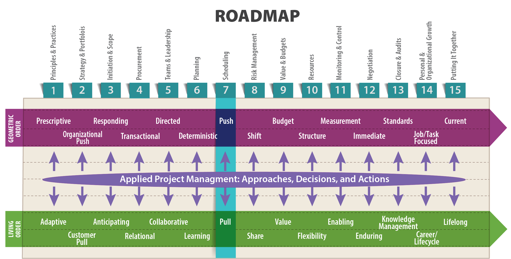
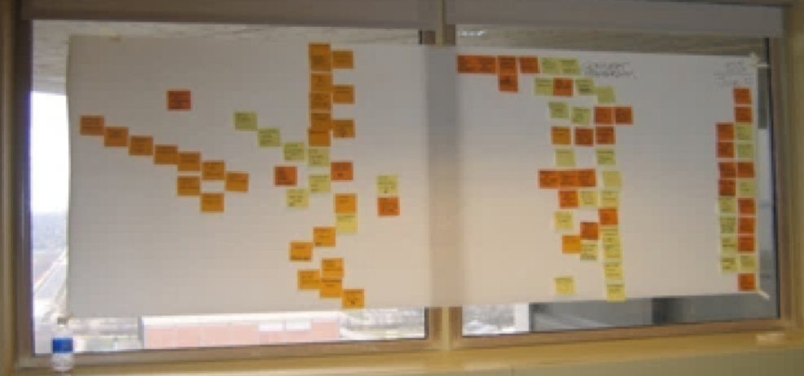

Essentially, all models are wrong, but some are useful.
– George Box, Founder of the Department of Statistics, University of Wisconsin-Madison

Objectives
After reading this lesson, you will be able to
The Big Ideas in this Lesson
As you learned in the previous lesson, a project plan is a high-level view of the project that roughly maps out how to achieve the project’s ultimate goals, given the available time and resources. In living order, a project plan is provisional and open to revision as you learn more about the project. A schedule is a specific, time-based map designed to help the project team get from the current state to successful project completion.
You can think of a project plan as similar to a football coach’s strategy for winning a particular game, which might, for instance, include ideas for containing a highly mobile quarterback, or for double-teaming an exceptionally good wide receiver. By contrast, a schedule is all about tactics; it is similar to the specific plays a team uses to ensure that the right players are in the right places on the field at the right time. A team will know some of these plays backwards and forwards after endless practice; other plays will be the result of adaptation and inspiration as the game unfolds. In the same vein, in living order, a schedule typically requires regular adjustments to account for the changing realities of the project.
Above all else, a schedule is a form of communication with everyone involved in the project. The attention of project stakeholders is a scarce resource. Therefore, you should strive to make your schedule worthy of your team’s attention. It’s important to shape a schedule to the team’s needs and strengths, and to your organization’s culture. A good role model for this type of flexibility is the jazz and classical musician Wynton Marsalis. When he is performing Mozart’s Trumpet Concerto in D with a symphony orchestra, he follows the strict rules of the classical music world. When he plays bebop at Lincoln Center, he switches to the free-form, improvisatory style of the jazz world. In the same way, as a project manager operating within living order, you need to be aware of what is and isn’t appropriate and useful for your particular project and organization throughout the life of your project.
In all cases, it’s essential to include the right amount of detail—neither too much nor too little. You should start by identifying key milestone dates as hard deadlines—the most important of which is the final delivery date. Those dates are often set in advance by other stakeholders and cannot be changed. Then build a schedule that provides paths to meeting those deadlines. If, as you build the schedule, you realize that meeting those deadlines is not possible, then you may have to adjust milestones and project completion dates.
Starting with the most important milestone, delivery date, and then building the schedule backwards, can help ensure that plans don’t get squeezed at the end. It is not uncommon for people to start out with a generous schedule for the first few activities and gradually get more aggressive with timing as they run up against the delivery date. The immediacy of the first activities means that people are more realistic about timings, whereas future activities get planned with more hope than knowledge.
Sometimes it’s helpful to start with the deadlines you want to meet, and then create a schedule that fits those dates. This can be a useful exercise that helps you understand the scheduling challenges you face, including identifying the project milestones. It’s also a good way to figure out what parts of the project you need to reevaluate and adjust.
It’s also important to tailor a schedule to match the project’s overall complexity and time requirements (for example, whether deadlines are hard or soft). Projects are not equal in terms of complexity and criticality. This means that the type of schedule that works for one project may not work for another.
You can choose from a host of software possibilities for generating schedules, such as MS Project. Whichever one you use, take care not to get so lost in the details of building a schedule, and interacting with the software interface, that you lose sight of the project goals as expressed in the project plan. Always keep in mind the project’s definition of success as expressed by the stakeholders, as well as the overall plan for completing the work. A good project manager is able to cross the bridge from the generalities of a project plan to the specifics of a schedule, without losing sight of the big picture.
Making sure all stakeholders use the same terminology is crucial in all phases of project management, but it’s especially important when you are trying to get a group of diverse people to agree to a schedule. After all, a schedule only works as a form of communication if it is written in a language everyone understands. And since contract terms are often tied to schedule, a lack of common agreement on the meaning of specific terms in a schedule can have far-ranging effects.
Terminology is so important that many state governments around the United States publish their own project management glossaries. As you embark on a new project, you’d be wise to find out if the organization you work for, or the vendors you will be working with, have compiled such a glossary. If such organizational resources exist, use them as a starting point for your own project glossary. Otherwise, you can always turn to the Project Management Institute’s lexicon (available here: “PMI Lexicon of Project Management Terms”) or glossaries provided online by consulting firms or other project management resources such as the following:
The following definitions of scheduling-related terms are taken from a variety of sources. You’ll find links to these sources in the bibliography at the end of this lesson.
One growing area of project management is virtual project environments. These relatively low-cost, stand-alone environments usually include a built-in project planner, as well as issues databases, resource allocation utilities, task managers, dashboards, and so on. These virtual environments are especially useful for dispersed teams and make access to MS Project or similar software unnecessary. Most importantly, a virtual project environment serves as a single source of information for important documents like project plans, thus avoiding problems with out-of-date or incorrect information circulating among team members. To see some examples, do a web search for Smartsheet, Mavenlink, and Genius Project.
Scheduling is a phase of project management that necessarily blends geometric and living order. Sometimes you need to hew to a predetermined order of activities on a tightly regulated schedule; sometimes you need to allow for the flexibility required when one activity is dependent on another activity of uncertain duration and complexity. In a true geometric order situation, you’ll likely spend more time planning upfront than updating later. In living order, the opposite is true. Generally speaking, in a geometric order, push environment, 60 percent of effort might go into planning, 10 percent into scheduling, and 30 percent into updating and revising the schedule. In a living order, pull environment, those percentages shift, with 30 percent of effort devoted to planning, 10 percent to scheduling, and 60 percent to adjusting and refining the schedule.
The planning and scheduling technique most closely associated with push planning and the geometric order is the critical path method (CPM), which is a “step-by-step project management technique for process planning that defines critical and non-critical tasks with the goal of preventing time-frame problems and process bottlenecks” (Rouse 2015). You can use CPM to identify impacts of proposed changes to the timing and duration of tasks. The key to CPM is identifying sequences of connected activities, known as paths (Larson and Gray 2011, 662). The critical path is defined as “the series of activities which determines the earliest completion of the project” (Project-Management.com 2016).
The scheduling technique that best exemplifies living order principles is a pull schedule created collaboratively by stakeholders, typically by using multi-colored Post-it notes. Details of this type of scheduling have been codified in the Last Planner System, a proprietary production planning system, based on Lean principles, and developed by Glenn Ballard and Greg Howell. Agile also makes use of pull scheduling techniques.
Although protecting the critical path is important in these types of living order scheduling, explicitly identifying and monitoring the critical path throughout the entire project may be less of a concern. We’ll explore why that’s true later in this lesson. First, let’s look at the basics of CPM. Then we’ll discuss the details of pull scheduling and consider ways to combine push and pull systems to achieve the ultimate goals of Lean: creating value and eliminating waste.
CPM is especially useful for large, complex projects where schedule interrelationships may not be readily apparent. It is “ideally suited to projects consisting of numerous activities that interact in a complex manner” (Rouse 2015). First used in industry in the late 1950’s, CPM has its roots in earlier undertakings, most notably on the Manhattan Project.
CPM focuses on identifying the critical path and then closely monitoring the activities on the critical path through the entire project. For example, when developing a new machine, the electronic circuit design may be the critical path defining the time to launch. Designing the mechanical structure might also be important, but it may not dictate the overall time to completion and therefore the critical path.
Creating a CPM model of a project involves these six steps:
Using CPM, you can identify:
A key value of CPM analysis is the understanding it can reveal to the project team about the chain of activities that are likely to establish the earliest completion of the project. This understanding can help the team explore ways to reduce project duration and can help the team focus on efficient execution of time-critical activities.
If you are considering pursuing certification as a Project Management Professional (PMP), you’ll definitely want to gain experience in CPM. As a technical project manager, you need to become conversant in CPM, even if you lack the technical expertise to create a full-blown CPM analysis in one of the many software products available for the job. Here are some helpful resources on the topic:
As you explore the tools available for implementing CPM, keep in mind that CPM is the ultimate geometric order tool for project management. It can lure you into a false sense of security regarding the predictableness of a project, causing you to presume, for instance, that it is always possible to identify all project activities and their durations ahead of time, or that the dependencies between them is always clear. But in the constantly changing living order, you need to be prepared for change at all times. In some large projects, there actually may be more than one critical path, or the critical path may shift during project execution. This means you need to keep your eye on near critical activities and paths, so you can spring into action if they suddenly become more critical than your original analysis had foreseen.
CPM provides a helpful model for testing the feasibility of a project’s overall schedule, and is therefore useful in the initial strategizing phase. However, it can become more of a burden than a help during execution if the project team feels compelled to follow the dictates of the CPM model too rigidly. It has limited value in guiding daily schedule decisions and on-the-job coordination. Project managers who spend too much time looking at their CPM models will miss the realities of day-to-day execution. This can enable reactive rather than proactive project management—that is, managing by looking out the rearview mirror instead of out of the windshield.
A successful project manager uses CPM as a means of keeping the project on track and assigning the most reliable personnel to critical activities, all the while keeping in mind that CPM does not deliver absolute truths. In the words of Dr. George Box, the founder of the Department of Statistics at the Univeristy of Wisconsin-Madison, “Essentially, all models are wrong, but some are useful.” This is absolutely true of CPM. You need to evaluate your CPM project models regularly to ensure that they are in alignment with the stakeholders’ definition of project success.
In the fast-changing projects that are becoming increasingly common in living order environments, you might have to start with a schedule for project milestones, with only a hypothesis of the overall critical path. Then, throughout the project, you might need to continually revise your concept of the critical path. For instance, when planning a large conference, your critical path may change if registrations significantly lag (or exceed) expectations, requiring you to adjust marketing efforts, logistics, and even the content of the conference. In software development, the critical path may change due to actions by competitors, changes in technology, risk mitigation efforts, scope changes and integration issues, just to name a few.
CPM can be very helpful when you need to compress a schedule—that is, when you need to take a schedule you have already developed and reduce it without adjusting the project’s scope. You can only compress a schedule by adjusting the schedule of activites on the critical path. Keep in mind that compressing a schedule adds cost and risk—often a lot of both. And compressing a schedule is often only achieved at the expense of the people doing the work—increasing their stress levels and overall frustration with their job.
There are two key ways to compress a schedule:
The important thing to remember when attempting to compress a schedule it that you need to focus on compressing the critical path. It doesn’t do any good to speed up tasks that aren’t on the critical path. According to an early, but still useful article about CPM, you can think of the critical path as the “bottleneck route:”
Only by finding ways to shorten jobs along the critical path can the overall project time be reduced; the time required to perform noncritical jobs is irrelevant from the viewpoint of total project time. The frequent (and costly) practice of “crashing” all jobs in a project in order to reduce total project time is thus unnecessary. Typically, only about 10% of the jobs in large projects are critical. (This figure will naturally vary from project to project.) Of course, if some way is found to shorten one or more of the critical jobs, then not only will the whole project time be shortened but the critical path itself may shift and some previously noncritical jobs may become critical. (Levy, Thompson and Wiest 1963)
In his seminal book The Mythical Man-Month, Fred Brooks explains that crashing a schedule doesn’t work in software development because: 1) people need time (often a lot of time) to get up to speed on a project; 2) as you add more people to a project, you increase the amount of communication required, which reduces everyone’s productivity; and 3) software development tasks can’t be subdivided into smaller tasks the way physical tasks such as painting a house can be. His entire argument can be boiled down to one widely quoted line, known as Brooks’ Law: “Adding manpower to a late software project makes it later” (1975, 25).
Dave Pagenkopf, an Application Development & Integration Director at the UW-Madison, explains how Agile software development offers an alternative to the painful realities of Brooks’ Law:
Early in my career, like many software engineers, I didn’t see how Brooks Law could possibly be true. But as I began to lead software projects, I began to see first-hand the problems that come with crashing a software development schedule. One of the reasons that I prefer Agile so much is that the approach keeps options open when a project is behind schedule. To hit a date in an Agile project, you can reduce the scope (keeping in mind that you can always add more scope later). An Agile software project that is 80% completed is likely still useful. A waterfall software project that is 80% completed is likely useless.
Here are a few tips to keep in mind when attempting to compress a schedule:
Now that you are familiar with CPM, the geometric order response to the demands of scheduling, let’s focus on the living order approach, pull scheduling. A pull schedule is by its very nature a work in progress. Creating it is a collaborative process, and it must be updated regularly in response to current conditions. As you saw in Lesson 6, an initial pull schedule is often created during a structured collaborative session with key project members using color-coded Post-it notes that can be removed or repositioned as necessary. The orange notes in Figure 7-1 represent deliverables; the yellow notes represent steps required to produce the deliverables. After all stakeholders agree, a schedule like this is typically translated into a digital format, such as Microsoft Project or Microsoft Excel.

In a pull schedule, it is essential to define the project’s deliverables and handoffs, which, cumulatively, add up to the project’s outcome. That’s why color-coded Post-it notes are so useful; they allow you to see all the project’s deliverables at a glance. A pull schedule also makes it easy to see the steps required to produce a deliverable, and to identify when the handoff to the next phase of the project occurs. As in a relay race, where runners pass the baton from one to the other, the handoffs are crucial to a project’s success. If a runner drops the baton, it often doesn’t matter how quickly she ran her leg of the race, because the other runners will never be able to make up for the time lost in retrieving the dropped baton. The same is true in living order project management, in which the flow of work from one phase to the next is of paramount concern, and in which successful handoffs between phases can mean the difference between a project that fails or succeeds.
You can create a pull schedule electronically, using any number of scheduling programs. But to encourage the kind of collaborative conversations that encourage all stakeholders to become pull thinkers, it’s helpful to start by gathering all stakeholders in a room with a large white board (or an entire wall) set aside to use as the schedule work area. Working backwards from a target completion date, stakeholders place color-coded Post-it notes on the schedule to indicate when they will complete various tasks. No participant is allowed to move another participant’s Post-it note. Instead, as scheduling conflicts become apparent, stakeholders need to negotiate with each other, repositioning Post-it notes only after stakeholders agree on a solution to each scheduling problem.
Because the people creating the schedule are the actual people responsible for the various activities, the process inevitably focuses on activities that are dependent on other activities. For example, passage of a key internal user test for new software would need to precede release of the software to an expanded beta test group. The end result of this kind of planning is a schedule with far greater team buy-in than can be produced with CPM alone.
The step-by-step process of creating a pull schedule is hard to grasp in the abstract. To really learn how it works, you have to do it. But you can get a better sense of the steps involved in pull scheduling by watching these videos:
Pull scheduling, in the form of the Last Planner System (LPS) is essential to Lean. The goal of the LPS is “to produce predictable work flow and rapid learning in programming, design, construction, and commissioning of projects” (Lean Construction Institute n.d.).
The five main elements of the LPS include:
Note that these elements are similar to Agile scrum, which is not surprising given that the LPS and Agile both emerged from Lean. Also, these five elements of LPS tie back to the concept of rolling wave planning, described in Lesson 6.
Schedules in the LPS focus on the last responsible moment, which is the “instant in which the cost of the delay of a decision surpasses the benefit of delay; or the moment when failing to make a decision eliminates an important alternative” (Lean Construction Institute). The last responsible moment is similar to choosing when to make an airline reservation. You want to wait long enough to know enough details to avoid costly changes and you want to take advantage of possible sale prices, but you also want to avoid cost increases and fully booked flights in the weeks just before travel. You choose the last responsible moment to book your travel using acquired knowledge and expectations about the future. In a construction site, there may be an LRM for finalizing excavation, another LRM for setting the forms, and yet another LRM for pouring the concrete.
Project managers who are new to LPS scheduling find this focus on the last responsible moment to be counter-intuitive, because once we identify the critical path, our intuition tells us to move things along the critical path as fast as possible. However, this presumes that you know everything there is to know about a project at the very beginning, which of course is never the case. In fact, focusing on the critical path sometimes causes us to do things earlier than we need to, which can lead to mistakes and rework as the needs of the project become clearer. In living order, we see projects as knowledge collection experiences, and therefore strive to put off doing any task until it is absolutely necessary. The LPS forces you to ask the question “How long can I defer this until I absolutely have to do it, because something else depends on it?”
When creating schedules in a Lean manufacturing environment, reducing batch sizes is an essential concept. Rather than scheduling a series of tasks to be completed once on a large batch, the small batch approach schedules many passes through the same series of tasks. This approach is more flexible and eliminates waste, ultimately increasing overall efficiency. It has been used successfully in paper mills, steel mills, and other industries (Preactor 2007). For more on small-batch scheduling, see this blog post: “Batch Scheduling in a Lean Manufacturing World.”
In all industries, a well-thought-out schedule—one that stakeholders can rely on—forms the basis for the formal commitments between team members that, in the world of Lean and the LPS, are known as reliable promises. As you learned in Lesson 5, a reliable promise is predicated on a team member’s honest assessment that she does indeed have the authority, competence, and capacity to make a promise, and a willingness to correct if she fails to follow through. A reliable promise identifies when a handoff will occur and the expectation that the receiver can be assured that the handoff will be complete and of the expected quality. For example, in the course of a project, stakeholders might make reliable promises regarding the completion of a required report, completion of a portion of software, or completion of a subcontractor’s work on a designated portion of a building.
In any undertaking, keeping track of the sequence of activities that must be completed to ensure that a project is concluded on time is essential. Indeed, in some situations, identifying and monitoring the critical path using CPM is a contractual obligation. This is most common in governmental work, especially in construction projects for departments of transportation.
But in highly fluid, living order situations, it’s important to ask exactly how much time and effort you should spend keeping track of the critical path. CPM advocates would argue your primary job as a project manager is to monitor the critical path. But some experts experienced in managing large, highly complex projects argue that focusing too much on the critical path can be counterproductive.
In their insightful paper, “The Marriage of CPM and Lean Construction,” two experienced Boldt company executives—Bob Huber, scheduling manager, and Paul Reiser, vice president of production and process innovation—look at the scheduling process through the lens of Lean. True to their experience in Lean construction techniques pioneered by the Boldt company, they start by asking the essential question of any Lean enterprise: what value does it provide? Their analysis shows that a schedule provides different value to different stakeholders. For the owner, the “value received from the schedule is the ability to communicate project duration and financing needs to upstream and downstream interested parties.” The value provided to other stakeholders include “project duration, impacts to adjacent facilities, expectations for the timing of engineering deliverables, crew flow map, just-in-time delivery opportunities” (2003).
For stakeholders primarily interested in project duration, the critical path is a special focus. But not everyone involved in a project requires minute details on the status of activities on the critical path. Huber and Reiser argue that, on a construction site, providing constant schedule updates using the complicated software available to manage CPM schedules wastes one of the most important resources available on any project: the attention of project stakeholders.
The explosive growth in the capability and sophistication of computer-based project management software over the last few decades has not been closely matched by a parallel interest in or need for the data and analysis that they provide. This is especially true of the interests and needs of the front-line production manager on a construction site. The planning effort, as it demands time and energy from the front-line managers, has to compete with day-to-day project requirements for safety and environmental considerations, scope management, financial management, labor relations, owner relations, procurement, payroll, and documentation. In this competitive environment, the competition being that for the attention of the front-line production manager, the CPM schedule must necessarily deliver its value quickly and efficiently or it faces the distinct possibility of losing out to other persistent demands on the manager’s time and attention. Just because we can create an extremely detailed WBS-based resource loaded and leveled schedule and just because we can report its content in a mind-numbing array of diagrams, charts, and graphs doesn’t mean we should. In fact, practiced as an interactive discussion of crew flow and site coordination needs, with data captured and analyzed for alignment with project needs in real time, the CPM scheduling process can fulfill its assigned functions very efficiently. The test should always be whether the CPM schedule is delivering value and being readily consumed by the site production controllers. (Huber and Reiser 2003)
John Nelson, adjunct professor of Engineering at the UW-Madison, and a veteran of many years in the construction industry, argues that an excessive focus on the critical path can derail a project’s chance of success: “Most critical path projects don’t meet their milestones. Most living order projects which ignore critical path do meet their milestones. An excessive focus on the critical path uses up too much energy; everyone is working on updating the critical path without actually getting anything done.”
Still, he explains, all forms of scheduling have their benefits. “Instead of just focusing on one way of thinking about a schedule, you should take advantage of all the scheduling techniques available: critical path, push, pull, and so on. If you use all these techniques to stress-test your conceptual understanding of the project, then you’re going to have a higher probability of success. And always keep in mind that a schedule conceived in one situation may have to be thrown out if externalities intervene. That’s the nature of living order. This is a special concern with CPM. If you try to manage to a critical path that was conceived under different circumstances, you have a lower probability of meeting your goals.”
One way to avoid getting lost in a sea of details is to focus on your project’s milestones, which can serve as a high-level guide. You can use pull planning to identify your project’s milestones, and then use critical path to figure out how to hit those milestones. It gives a reality test to whether your milestones are in fact achievable. Then you’re off and running, in living order.
In an excellent blog post on the usefulness of milestones, Elizabeth Harrin explains that milestones should be used “as a way of showing forward movement and progress and also show people what is going on, even if they don’t have a detailed knowledge of the tasks involved to get there. In that respect, they are very useful for stakeholder communication and setting expectations” (Harrin 2017). You can use milestones, she explains, to track your progress, focusing on
Milestones are especially useful as a form of communication on the health of a project. A version of a project schedule that consists only of milestones allows stakeholders to get a quick sense of where things stand. As you’ll learn in Lesson 11, you’ll also want to report on milestones in the project’s dashboard, which should serve as an at-a-glance update for the project.
Brooks, Jr., Frederick P. 1975. The Mythical Man-Month. Boston: Addison-Wesley.
Harrin, Elizabeth. 2017. “Learn What a Project Milestone Is.” The Balance Careers. October 13. https://www.thebalance.com/what-is-a-project-milestone-3990338.
Huber, Bob, and Paul Reiser. 2003. The Marriage of CPM and Lean Construction. The Boldt Company.
Larson, Erik W., and Clifford F. Gray. 2011. Project Management: The Managerial Process, Sixth Edition. New York: McGraw-Hill Education.
Law, Jonathan, ed. 2016. A Dictionary of Business and Management. Oxford: Oxford University Press. https://books.google.com/books?id=w3owCwAAQBAJ&printsec=frontcover&source=gbs_ge_summary_r&cad=0#v=onepage&q&f=false.
Lean Construction Institute. n.d. “Glossary.” Lean Construction Institute. Accessed July 1, 2018. http://www.leanconstruction.org/training/glossary/#l.
—. n.d. “The Last Planner.” Lean Construction Institute. Accessed July 1, 2018. http://www.leanconstruction.org/training/the-last-planner/.
Levy, F. K., G. L. Thompson, and J. D. Wiest. 1963. “The ABCs of the Critical Path.” Harvard Business Review. https://hbr.org/1963/09/the-abcs-of-the-critical-path-method.
Monnappa, Avantika. 2017. “Project Management Learning Series: Fast Tracking versus Crashing.” Simplilearn. December 19. https://www.simplilearn.com/fast-tracking-vs-crashing-article.
Preactor. 2007. “Batch Scheduling in a Lean Manufacturing World.” Preactor. February. http://www.preactor.com/Batch-Scheduling-in-a-Lean-Manufacturing-World.
Project-Management.com. 2016. “PMO and Project Management Dictionary.” PM Project Management.com. December 16. https://project-management.com/pmo-and-project-management-dictionary/.
Rouse, Margaret. 2015. “Critical Path Method (CPM).” WhatIs.TechTarget.com. January. http://whatis.techtarget.com/definition/critical-path-method-CPM.
State of Michigan: Department of Technology, Management & Budget. 2013. “Project Management Key Terms, Definitions and Acronyms.” August. https://www.michigan.gov/documents/suite/PM_KeyTerms_Defs_Acronyms_080213_431285_7.pdf.